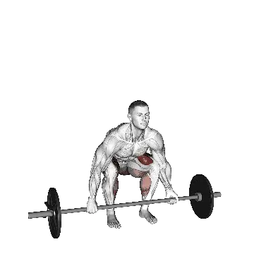

中級平均重量
一般中級訓練者的參考值。
男性
336 lb
女性
193 lb
硬舉平均重量 [1RM]
| 等級 | ||
|---|---|---|
| 初學者 | 173 lb | 84 lb |
| 初級者 | 246 lb | 132 lb |
| 中級者 | 336 lb | 193 lb |
| 進階者 | 440 lb | 265 lb |
| 菁英 | 552 lb | 345 lb |
註：這些標準是以一般訓練者的 1RM 為基準估算。體重、年齡等個人因素都可能造成差異。詳細資料請參考下方表格。
硬舉力量標準(lb)
男性按體重(lb)資料 [1RM]
| 體重 | 初學者 | 初級者 | 中級者 | 進階者 | 菁英 |
|---|---|---|---|---|---|
| 110 | 96 | 144 | 204 | 275 | 352 |
| 120 | 111 | 162 | 225 | 300 | 380 |
| 130 | 126 | 179 | 246 | 323 | 407 |
| 140 | 140 | 197 | 266 | 346 | 433 |
| 150 | 154 | 213 | 286 | 368 | 457 |
| 160 | 168 | 229 | 304 | 389 | 481 |
| 170 | 181 | 245 | 322 | 410 | 503 |
| 180 | 195 | 261 | 340 | 430 | 525 |
| 190 | 208 | 275 | 357 | 449 | 546 |
| 200 | 220 | 290 | 373 | 467 | 567 |
| 210 | 233 | 304 | 389 | 485 | 587 |
| 220 | 245 | 318 | 405 | 503 | 606 |
| 230 | 257 | 332 | 420 | 520 | 624 |
| 240 | 268 | 345 | 435 | 536 | 642 |
| 250 | 280 | 358 | 450 | 552 | 660 |
| 260 | 291 | 370 | 464 | 568 | 677 |
| 270 | 302 | 383 | 478 | 583 | 694 |
| 280 | 313 | 395 | 491 | 598 | 710 |
| 290 | 323 | 407 | 504 | 613 | 726 |
| 300 | 333 | 418 | 517 | 627 | 741 |
| 310 | 344 | 430 | 530 | 641 | 756 |
男性按年齡資料 [1RM]
| 年齡 | 初學者 | 初級者 | 中級者 | 進階者 | 菁英 |
|---|---|---|---|---|---|
| 15 | 147 | 209 | 286 | 375 | 470 |
| 20 | 169 | 240 | 327 | 429 | 538 |
| 25 | 173 | 246 | 336 | 440 | 552 |
| 30 | 173 | 246 | 336 | 440 | 552 |
| 35 | 173 | 246 | 336 | 440 | 552 |
| 40 | 173 | 246 | 336 | 440 | 552 |
| 45 | 164 | 233 | 319 | 417 | 524 |
| 50 | 154 | 219 | 299 | 392 | 492 |
| 55 | 142 | 202 | 277 | 362 | 455 |
| 60 | 130 | 185 | 252 | 331 | 415 |
| 65 | 118 | 167 | 228 | 299 | 375 |
| 70 | 105 | 150 | 205 | 268 | 336 |
| 75 | 94 | 134 | 183 | 240 | 301 |
| 80 | 84 | 120 | 164 | 214 | 269 |
| 85 | 76 | 107 | 147 | 192 | 241 |
| 90 | 68 | 97 | 132 | 173 | 217 |
女性按體重(lb)資料 [1RM]
| 體重 | 初學者 | 初級者 | 中級者 | 進階者 | 菁英 |
|---|---|---|---|---|---|
| 90 | 54 | 90 | 139 | 198 | 264 |
| 100 | 61 | 99 | 150 | 211 | 279 |
| 110 | 67 | 108 | 161 | 224 | 294 |
| 120 | 74 | 116 | 171 | 235 | 307 |
| 130 | 80 | 124 | 180 | 246 | 319 |
| 140 | 86 | 131 | 189 | 257 | 331 |
| 150 | 92 | 138 | 197 | 267 | 343 |
| 160 | 97 | 145 | 205 | 276 | 353 |
| 170 | 103 | 152 | 213 | 285 | 363 |
| 180 | 108 | 158 | 221 | 294 | 373 |
| 190 | 113 | 164 | 228 | 302 | 382 |
| 200 | 118 | 170 | 235 | 310 | 391 |
| 210 | 123 | 176 | 241 | 317 | 400 |
| 220 | 127 | 181 | 248 | 325 | 408 |
| 230 | 132 | 186 | 254 | 332 | 416 |
| 240 | 136 | 192 | 260 | 339 | 424 |
| 250 | 140 | 197 | 266 | 345 | 431 |
| 260 | 144 | 201 | 272 | 352 | 438 |
女性按年齡資料 [1RM]
| 年齡 | 初學者 | 初級者 | 中級者 | 進階者 | 菁英 |
|---|---|---|---|---|---|
| 15 | 72 | 112 | 164 | 226 | 294 |
| 20 | 82 | 128 | 188 | 258 | 337 |
| 25 | 84 | 132 | 193 | 265 | 345 |
| 30 | 84 | 132 | 193 | 265 | 345 |
| 35 | 84 | 132 | 193 | 265 | 345 |
| 40 | 84 | 132 | 193 | 265 | 345 |
| 45 | 80 | 125 | 183 | 252 | 328 |
| 50 | 75 | 117 | 171 | 236 | 308 |
| 55 | 69 | 108 | 159 | 218 | 284 |
| 60 | 63 | 99 | 145 | 199 | 260 |
| 65 | 57 | 89 | 131 | 180 | 235 |
| 70 | 51 | 80 | 117 | 162 | 210 |
| 75 | 46 | 72 | 105 | 145 | 188 |
| 80 | 41 | 64 | 94 | 129 | 168 |
| 85 | 37 | 57 | 84 | 116 | 151 |
| 90 | 33 | 52 | 76 | 104 | 136 |
註：一般健身房的標準槓鈴通常為44 lb。
用 Shiba App 記錄與分析
集中查看重量、次數與進步變化。
世界紀錄
更新： July 2, 2026
Powerlifting and strongman deadlifts use different equipment and rulesets, so records are separated by category.
表格說明
| 等級 | 說明 | 分布 |
|---|---|---|
| 初學者 | 掌握正確動作，並持續訓練至少 1 個月。 | 後 5% |
| 初級者 | 持續規律訓練至少 6 個月。 | 前 80% |
| 中級者 | 持續規律訓練至少 2 年。 | 前 50% |
| 進階者 | 持續規律訓練超過 5 年。 | 前 20% |
| 菁英 | 針對該動作專項訓練超過 5 年。 | 前 5% |